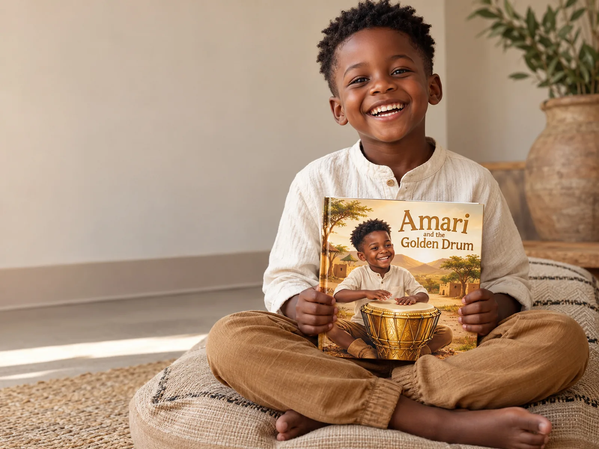

Personalised gifts for kids: 10 ideas they'll keep for years
A gift with a child's name on it says “this was made for you”, and children feel that. The best personalised gifts are the ones still on the shelf years later. Here are ten ideas for children aged 2 to 8, for birthdays, Eid or just because.
1. A storybook where they are the hero
A personalised book puts their name and illustrated face on every page, in Arabic or English, with your own message on the first page. Hikaya books are 21×21 cm hardcovers, made to order and delivered in a gift box. Not sure yet? Try their cover free first.
2. A wooden name puzzle
Perfect for ages 2 to 4. Each letter of their name is a puzzle piece, so playing becomes a first lesson in spelling.
3. A school bag or lunch box with their name
Useful and personal at the same time, and it never gets mixed up with a classmate's. A great choice before nursery or the first day of school.
4. A growth chart
A wall chart with their name to mark their height on every birthday. Years later, it tells the story of how they grew.
5. An embroidered bathrobe or towel
A soft, everyday luxury with their name or initial stitched on. It makes bath time feel a little special.
6. A night light with their name
A gentle glow by the bed helps little ones who are nervous about the dark, and seeing their own name makes it feel like theirs.
7. A print of the sky on the day they were born
A star map of the night they were born, with their name and birth date, is a lovely piece for their room that they will keep as they grow.
8. A keepsake box for their treasures
A wooden box with their name for drawings, first teeth, notes and tickets. Children love having a place for the things that matter to them.
9. Their own drawing turned into a keepsake
Turn a favourite drawing into a cushion, a mug or a framed print. It tells them their art is worth keeping.
10. A letter for them to open when they are older
Write about who they are today: what they love, what makes them laugh, what you hope for them. Seal it and add the age they should open it. It costs nothing and means everything.
Tip: choose a gift that will still matter in five years
Ask yourself whether it will still be kept, not just used. Personalised gifts are made to order, so allow time: Hikaya delivers in about 5 working days in the UAE (free) and about 7 in the rest of the GCC. You can also send the book straight to the child's home. See gift ideas by occasion.